1. 任务与目标
本项目要解决的问题是：只在一个房间里测几十个点，能不能把整间房的 Wi-Fi 信号强度 图还原出来？如果能，普通用户就不必举着手机把家里走一遍。
课程任务书给出三条明确要求，本报告逐条对应：
- 统一输入三通道：稀疏 RSSI 图、观测位置标记图、房间有效区域图。
未测位置只是占位值，不能被理解为零信号。→ 见 §7 与代码
rfmap/models.py::build_input_tensor。 - 三个网络方案：卷积补全自编码器、小型 U-Net（建议主模型）、 插值引导残差 U-Net。→ 见 §7.1 ~ §7.3。 在此基础上，本报告又自行追加了两个方案：方案四 （散落布点训练的数据消融，§7.4）与 方案五 （物理引导多先验残差 U-Net，§7.5）。五个方案的横向对比见 §10.1， 方案四的单变量消融见 §10.4，方案五的逐项剖析见 §10.5。
- 评估口径：在未参与训练的测试场景上，用其余隐藏实测点做答案， 报告 MAE、RMSE（单位 dB）与推理时间，并与只使用相同输入点的 简单插值方法比较。→ 见 §9、§10。 由于方案二与方案四是配对消融，评测同时使用两个仿真测试集 （常规布点 / 散落布点），两者逐元素共享同一批户型与真值； 另对方案五做了 TTA 开/关消融（§10.6）。
任务书同时强调一句关键的话："不要用插值结果充当实测答案"， 以及"若只有一张固定地图，反复遮挡只能用于程序调试，不能证明模型学会了未知地图补全"。 本项目手里恰好只有 1 张真实参考地图，因此报告把结论拆成两类分别陈述， 并在 §11 明确写出强度差异。
2. 实测数据与质检
2.1 数据来源
数据来自工作区的 data.xlsx（Sheet1，A1:D50）：表头为
x轴（m） / y轴（m） / RSSI（dBm），共 49 个测点。
规范化后的副本见 data/rfmap/measured.csv（含对齐后的房间坐标）。
2.2 质检结果
| 检查项 | 结果 | 说明 |
|---|---|---|
| 测点总数 | 49 | 物理解析成功、无重复坐标 |
| x 取值（现场标称） | [0.0, 2.0, 4.0, 6.0, 8.0, 10.3, 11.7, 12.0] | 名义网格 2 m，其中 10.3 / 11.7 为人为调整点 |
| y 取值（现场标称） | [0.0, 2.0, 4.0, 6.0, 8.0, 8.9, 10.0, 12.0] | 名义网格 2 m，8.9 为规避障碍的调整点 |
| RSSI 范围 | -51.0 ~ -30.0 dBm | 均值 -43.286 dBm，中位数 -44.0 dBm |
| 最小测点间距 | 1.116 m | 出现在 (11.7, 8.9) 与 (12, 10) 之间 |
| 落在房间外的点 | 0 | 对齐后全部测点都在房间内 |
| 名义网格上的缺格 | 15 | 见 §3.3 的结构性解释 |
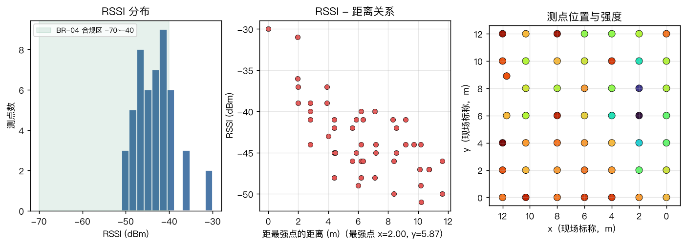
2.3 全部测点
| # | x 标称 | y 标称 | x 房间坐标 | y 房间坐标 | RSSI (dBm) | 在房间内 | BR-04 |
|---|---|---|---|---|---|---|---|
| 1 | 0 | 0 | 0.000 | 0.000 | -44 | 是 | 正常 |
| 2 | 0 | 2 | 0.000 | 1.955 | -42 | 是 | 正常 |
| 3 | 0 | 4 | 0.000 | 3.910 | -39 | 是 | ⚠ 偏强 |
| 4 | 0 | 6 | 0.000 | 5.865 | -39 | 是 | ⚠ 偏强 |
| 5 | 0 | 8 | 0.000 | 7.821 | -41 | 是 | 正常 |
| 6 | 0 | 10 | 0.000 | 9.776 | -41 | 是 | 正常 |
| 7 | 0 | 12 | 0.000 | 11.731 | -46 | 是 | 正常 |
| 8 | 2 | 0 | 2.000 | 0.000 | -45 | 是 | 正常 |
| 9 | 2 | 2 | 2.000 | 1.955 | -39 | 是 | ⚠ 偏强 |
| 10 | 2 | 4 | 2.000 | 3.910 | -36 | 是 | ⚠ 偏强 |
| 11 | 2 | 6 | 2.000 | 5.865 | -30 | 是 | ⚠ 偏强 |
| 12 | 2 | 8 | 2.000 | 7.821 | -31 | 是 | ⚠ 偏强 |
| 13 | 2 | 10 | 2.000 | 9.776 | -37 | 是 | ⚠ 偏强 |
| 14 | 2 | 12 | 2.000 | 11.731 | -41 | 是 | 正常 |
| 15 | 4 | 0 | 4.000 | 0.000 | -48 | 是 | 正常 |
| 16 | 4 | 2 | 4.000 | 1.955 | -45 | 是 | 正常 |
| 17 | 4 | 4 | 4.000 | 3.910 | -44 | 是 | 正常 |
| 18 | 4 | 6 | 4.000 | 5.865 | -37 | 是 | ⚠ 偏强 |
| 19 | 4 | 8 | 4.000 | 7.821 | -40 | 是 | 正常 |
| 20 | 4 | 10 | 4.000 | 9.776 | -48 | 是 | 正常 |
| 21 | 4 | 12 | 4.000 | 11.731 | -40 | 是 | 正常 |
| 22 | 6 | 0 | 6.000 | 0.000 | -48 | 是 | 正常 |
| 23 | 6 | 2 | 6.000 | 1.955 | -46 | 是 | 正常 |
| 24 | 6 | 4 | 6.000 | 3.910 | -45 | 是 | 正常 |
| 25 | 6 | 6 | 6.000 | 5.865 | -43 | 是 | 正常 |
| 26 | 6 | 8 | 6.000 | 7.821 | -45 | 是 | 正常 |
| 27 | 6 | 10 | 6.000 | 9.776 | -42 | 是 | 正常 |
| 28 | 6 | 12 | 6.000 | 11.731 | -40 | 是 | 正常 |
| 29 | 8 | 0 | 8.000 | 0.000 | -46 | 是 | 正常 |
| 30 | 8 | 2 | 8.000 | 1.955 | -45 | 是 | 正常 |
| 31 | 8 | 4 | 8.000 | 3.910 | -46 | 是 | 正常 |
| 32 | 8 | 6 | 8.000 | 5.865 | -49 | 是 | 正常 |
| 33 | 8 | 8 | 8.000 | 7.821 | -41 | 是 | 正常 |
| 34 | 8 | 10 | 8.000 | 9.776 | -44 | 是 | 正常 |
| 35 | 8 | 12 | 8.000 | 11.731 | -50 | 是 | 正常 |
| 36 | 10.3 | 0 | 10.300 | 0.000 | -49 | 是 | 正常 |
| 37 | 10.3 | 2 | 10.300 | 1.955 | -44 | 是 | 正常 |
| 38 | 10.3 | 4 | 10.300 | 3.910 | -45 | 是 | 正常 |
| 39 | 10.3 | 6 | 10.300 | 5.865 | -41 | 是 | 正常 |
| 40 | 10.3 | 8 | 10.300 | 7.821 | -42 | 是 | 正常 |
| 41 | 10.3 | 10 | 10.300 | 9.776 | -41 | 是 | 正常 |
| 42 | 10.3 | 12 | 10.300 | 11.731 | -44 | 是 | 正常 |
| 43 | 11.7 | 6 | 11.700 | 5.865 | -44 | 是 | 正常 |
| 44 | 11.7 | 8.9 | 11.700 | 8.700 | -47 | 是 | 正常 |
| 45 | 12 | 0 | 12.000 | 0.000 | -46 | 是 | 正常 |
| 46 | 12 | 2 | 12.000 | 1.955 | -47 | 是 | 正常 |
| 47 | 12 | 4 | 12.000 | 3.910 | -51 | 是 | 正常 |
| 48 | 12 | 10 | 12.000 | 9.776 | -47 | 是 | 正常 |
| 49 | 12 | 12 | 12.000 | 11.731 | -50 | 是 | 正常 |
3. 户型几何重建
房间几何不是"画着好看"的背景，它直接决定哪些格点是有效区、哪些测点合法。
本节全部尺寸取自户型图 实验地户型.png 上的实测标注，未作任何主观修改。
3.1 标注读数与尺寸链验算
| 项目 | 数值 (m) | 来源 / 验算 |
|---|---|---|
| 外轮廓宽 | 13.123 | 户型图顶部/底部标注 |
| 外轮廓高 | 12.357 | 户型图左/右侧标注 |
| 墙厚 | 0.24 | 四边标注一致 |
| 内部净宽 | 12.643 | = 13.123 − 2 × 0.24 = 12.643 ✓ |
| 内部净高 | 11.731 | = 12.357 − 0.24 − 0.24 − 0.146 = 11.731 ✓ |
| 结构柱宽（伸入房间深度） | 0.83 | 柱体标注 0.830 |
| 结构柱高 | 1.01 | 柱体标注 1.010 |
| 柱上沿距内顶 | 4.96 | 标注 4.960 |
| 柱下沿距内底 | 5.761 | 标注 5.761 |
| 尺寸链闭合检查： 4.960 + 1.010 + 5.761 = 11.731 = 内部净高 11.731 ✓ —— 三条标注互相自洽，说明读数没有抄错。 | ||
| 顶部窗宽 | 10.991 | 标注 10.991 |
| 底部门宽 | 2.33 | 标注 2.330 |
| 套内面积 | 146.21 m² | 户型图正面标注 |
| 面积交叉验证：内部矩形 148.32 m² − 结构柱 0.84 m² = 147.48 m²； 多边形鞋带公式独立算出 147.48 m²，两者一致 ✓。 与户型图标注的 146.21 m² 相差 1.27 m² （约 0.87%）， 该差异来自图中未标注的墙面附属构造。 | ||
3.2 与旧版轮廓的差异（重要修正）
3.3 结构柱解释了数据里的两个"缺口"
实测数据在 x = 12 这一列上缺少 y = 6 与 y = 8 两点，
改用 (11.7, 6) 与 (11.7, 8.9) 替代。这不是采集遗漏，
而是一个可以被几何独立验证的必然结果：
| 测点 | 房间坐标 | 是否落在结构柱内 | 数据表中的实际情况 |
|---|---|---|---|
| (12, 6) | (12.00, 5.87) | 是（x ∈ [11.813, 12.643] 且 y ∈ [5.761, 6.771]） | 该点不存在 —— 与"柱体无法布点"完全一致 |
| (11.7, 6) | (11.70, 5.87) | 否（11.70 < 11.813，位于柱外 0.113 m） | 该点存在，RSSI = −44 dBm |
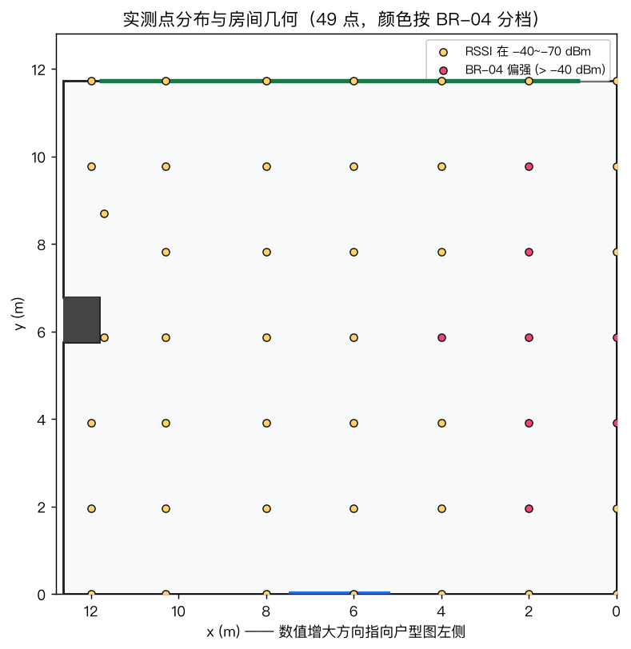
4. 坐标系与对齐规则
4.1 坐标系约定
- 原点
(0, 0)= 房间内部右下角； - x 轴正向指向户型图左侧（与实测数据表 x 增大方向一致）；
- y 轴正向向上。
4.2 实测坐标 → 房间坐标
实测点的标称跨度是 12 m × 12 m，而户型图内部是 12.643 m × 11.731 m， 两者存在现场量测偏差。对齐规则如下：
| 轴 | 系数 | 理由 |
|---|---|---|
| x | 1.0 | 保持现场标称值不缩放。理由见 §3.3：缩放会与结构柱的证据冲突。 代价是房间在 x ∈ [12, 12.643] 之间留下一段 0.643 m 宽的未采样边带，本报告如实标注。 |
| y | 0.977583 | = 11.731 / 12，把实测 12 m 跨度压缩进房间内高， 使 y = 12 的贴墙点恰好落在内墙上。 |
该变换只做平移与线性缩放，保持点与点之间的相对位置关系， 不引入任何旋转或非线性形变。
4.3 计算网格
| 参数 | 取值 | 说明 |
|---|---|---|
| 栅格间距 | 0.2 m | 正方形格。实测信号的相关长度约 0.8~1.1 m（见 §10 基线标定）， 0.2 m 足以刻画起伏。 |
| 网格尺寸 | 64 × 64 | 64 能被 3 次下采样整除，便于 U-Net；训练、推理、前端三方共用同一份
data/rfmap/grid.json，杜绝"训练用 A 网格、推理用 B 网格"。 |
| 覆盖范围 | 12.8 × 12.8 m | 略大于房间，超出部分是无效区，由房间掩码标记。 |
| 有效格点数 | 3697 / 4096 | 房间（扣除柱体）内部的栅格数。 |
5. 数据划分协议
5.1 先划场景，再划测点
任务书要求：先按独立场景组划分训练/验证/测试，再对每张地图抽取测点；
同一参考地图的重复记录必须放在同一集合。本项目严格执行，并且把这条规则
落实到代码里（rfmap/evaluate.py::split_points），而不是靠人工记录。
5.2 两套固定协议
| 协议 | 输入点 | 隐藏点 | 最优方法 | RMSE | 最优插值基线 | RMSE |
|---|---|---|---|---|---|---|
| 角块留出（外推） | 43 | 6 | unet_ft | 2.591 | 基线 · 反距离加权 (IDW, p=2) | 4.234 |
| 中心块留出（插值） | 40 | 9 | 方案五 · 物理引导多先验残差 U-Net | 2.275 | 基线 · 反距离加权 (IDW, p=2) | 2.613 |
角块留出（外推）：隐藏 x∈{0, 2} × y∈{8, 10, 12} 共 6 点， 全部位于房间一角，周围没有其它观测点，考察的是"往外推"的能力。
中心块留出（插值）：隐藏 x∈{4, 6, 8} × y∈{4, 6, 8} 共 9 点， 位于房间中央、四周仍有观测点包围，考察的是"往中间补"的能力。
两套协议把"插值能力"和"外推能力"分离开，这正是任务书想要的对比口径。
5.3 输入点数扫描
任务书还要求"改变输入测点数量和空间分布，观察预测误差如何变化"。 为此对 K ∈ {5, 10, 15, 20, 30} 各做 20 次随机抽样（种子固定）， 每次随机选 K 个点作输入、其余全部作隐藏点，报告 RMSE 的均值与标准差。
| 输入点数 | 方案一 · 卷积补全自编码器 | 基线 · 对数距离趋势 + RBF 残差 | 基线 · 反距离加权 (IDW, p=2) | 基线 · 最近邻 | 方案五 · 物理引导多先验残差 U-Net | 基线 · 零均值 RBF（对照，无趋势项） | 方案三 · 插值引导残差 U-Net | 方案二 · 小型 U-Net | 方案四 · 散落布点训练的 U-Net |
|---|---|---|---|---|---|---|---|---|---|
| 5 | 9.268 ±1.50 | 5.819 ±2.27 | 4.863 ±0.86 | 5.437 ±1.15 | 6.139 ±1.64 | 19.175 ±8.93 | 5.934 ±0.94 | 8.090 ±1.49 | 10.258 ±1.83 |
| 10 | 6.889 ±0.79 | 4.297 ±0.56 | 4.141 ±0.57 | 5.178 ±0.75 | 4.388 ±0.68 | 19.079 ±6.21 | 4.961 ±0.64 | 6.182 ±0.97 | 7.182 ±1.35 |
| 15 | 6.904 ±0.71 | 4.247 ±0.77 | 3.924 ±0.48 | 4.652 ±0.54 | 4.495 ±0.78 | 18.590 ±3.36 | 4.975 ±0.72 | 6.161 ±0.85 | 6.675 ±0.83 |
| 20 | 6.323 ±0.67 | 3.948 ±0.51 | 3.911 ±0.38 | 4.443 ±0.55 | 4.107 ±0.78 | 15.739 ±3.39 | 4.567 ±0.55 | 5.477 ±0.84 | 5.684 ±0.63 |
| 30 | 5.890 ±0.46 | 3.864 ±0.50 | 3.626 ±0.66 | 4.261 ±0.46 | 4.040 ±0.76 | 10.989 ±2.46 | 4.272 ±0.53 | 5.292 ±0.62 | 5.604 ±0.48 |
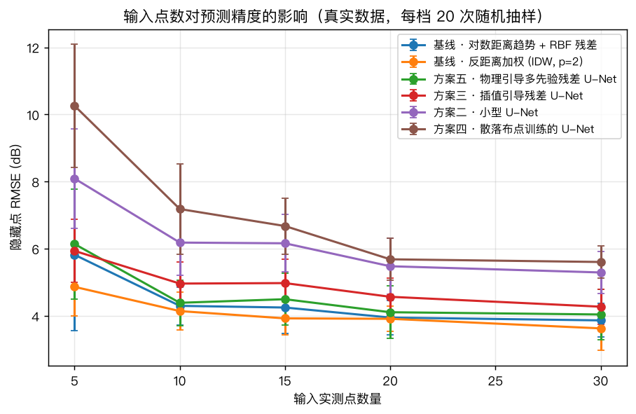
- 跨户型 / 跨 AP 的能力 —— 由 §6 的物理仿真测试集（200 个 随机户型场景）回答，结论强度较高；
- 同一房间内的稀疏重建能力 —— 由真实 49 点留出回答， 结论强度受限于单一房间、单一部署，不能外推成"换一个房子也行"。
6. 物理仿真数据
6.1 为什么必须有仿真数据
用 49 个点训练一个能"补全新地图"的网络是不可能的：模型会把这一间房的 具体路径损耗场背下来，换一间房立刻失效。任务书给出的出路是先建立能训练、 能预测的基线，再用真实数据做微调。本项目按这个思路实现： 用物理模型生成大量随机户型 / 随机 AP 的地图做预训练，再用真实 49 点微调。
6.2 仿真物理模型
PL(d) = PL0 + 10·n·log10(max(d, 0.5) / 1.0)
RSSI = −(PL0 + 10·n·log10(d)) − wall_attenuation + shadow_field + noise
PL0 ~ U(32, 46) dB 1 m 参考路损
n ~ U(1.8, 3.2) 室内路损指数
wall_attenuation AP 与格点连线每穿过一个障碍矩形，累加 U(4, 14) dB
shadow_field 空间相关高斯场（白噪声高斯滤波，std ~ U(1.5, 4.5) dB）
noise 逐点独立 U(0.3, 1.2) dB
最终截断到 [−95, −25] dBm每张图随机生成户型（矩形外墙 + 0~3 个内部障碍矩形）、随机 AP 位置、 随机路损参数与随机阴影场，并随机抽 5~30 个观测点。默认的抽样策略是 约一半"近似等距网格 + 抖动"、一半纯随机，让模型见过多种布点方式； 方案四则另用一份 100% 散落式布点的数据集（见 §6.3(b) 与 §7.4）， 用来单独考察布点方式这一个变量。
6.3 数据集
(a) 常规布点数据集 —— 方案一 / 二 / 三 使用：
| 文件 | 样本数 | 数组形状 | 大小 |
|---|---|---|---|
| data/sim/train.npz | 1200 | [64, 64] | 9.06 MB |
| data/sim/val.npz | 200 | [64, 64] | 1.5 MB |
| data/sim/test.npz | 200 | [64, 64] | 1.49 MB |
三个划分使用互不相同的固定种子（20261021 / 20261022 / 20261023）， 测试集场景与训练集完全独立。
(b) 散落布点数据集 —— 方案四使用：
| 文件 | 样本数 | 大小 |
|---|---|---|
| data/sim_scatter/train.npz | 1200 | 9.06 MB |
| data/sim_scatter/val.npz | 200 | 1.5 MB |
| data/sim_scatter/test.npz | 200 | 1.49 MB |
room 与 target 数组
逐元素复制自 (a)，只有观测点位置被重新抽取
（rfmap.simulate.reobserve_dataset，种子 20261101/02/03）。
因此 (a) 与 (b) 的测试集互为最严格的对照：同一间房、同一个真值场、
同一批观测点数量，只有观测点的位置不同。方案四在 (a)、(b) 两个测试集上的
成绩都能直接与方案二相减，差值就是"布点方式"的净效应。
(c) 方案五的训练数据：(a) 与 (b) 的训练划分合并使用 （共 2400 个样本）， 验证仍用 (a) 的验证划分，以保证五个方案的早停标准一致。
6.4 仿真数据自检
生成后逐项自检，全部通过：观测点上的观测值与真值逐元素一致、 观测点全部位于房间内、房间占比落在 30%~80%、真值域落在 [−95, −25] dBm、 同种子两次生成完全一致、且真值最大值出现在距 AP 最近 15% 区域内的比例达 100%。 最后一项用来确认仿真场确实具有"离 AP 越近越强"的物理合理性，而不是随机噪声。
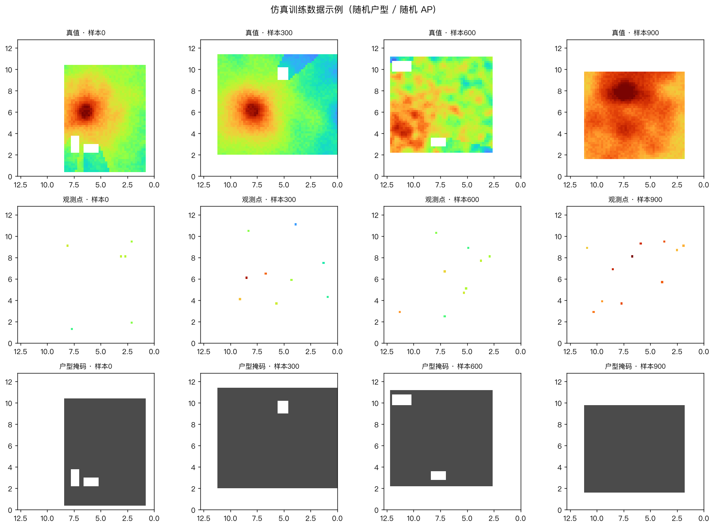
7. 网络方案：从任务书的三个方案到方案五
任务书要求实现三个网络方案（补全自编码器、小型 U-Net、插值引导残差 U-Net）， 本报告在这三个基础方案之上，再补做两个方案：
| 方案 | 一句话概括 | 引入这个方案要回答的问题 |
|---|---|---|
| 方案一 · 卷积补全自编码器 | 无跳跃连接的编码-解码补全 | （任务书要求）最朴素的补全网络能做到什么程度 |
| 方案二 · 小型 U-Net | 带跳跃连接的 U-Net（任务书建议主模型） | （任务书要求）跳跃连接对局部结构的价值 |
| 方案三 · 插值引导残差 U-Net | IDW 先验 + 残差学习 | （任务书要求）让网络只学"插值错在哪"是否更省力 |
| 方案四 · 散落布点训练的 U-Net | 结构与方案二完全相同，只改训练数据的布点方式 | 真实用户不会按网格布点。观测点散乱时，模型还准吗？ |
| 方案五 · 物理引导多先验残差 U-Net | 6 通道输入 + IDW 先验残差 + 观测加权损失 + TTA | 把前四个方案暴露的短板逐个补上，能到一个什么精度？ |
全部方案用 PyTorch 实现；方案一/二/三/四 统一输入 3 通道
（稀疏观测值、观测掩码、房间有效区掩码），方案三/五额外拼 1 路插值先验，
方案五再补 3 路物理引导通道（详见 §7.5）。为便于把权重导出到浏览器做纯 JS 前向，
网络不使用 BatchNorm / Dropout，全部归一化只保留"输入 / 输出各一次线性缩放"，
由 Normalizer 统一负责并随权重一起导出。
7.1 方案一 · 卷积补全自编码器
编码器把稀疏观测压缩到 1/8 分辨率的潜变量，解码器直接恢复整张地图。 没有跳跃连接 —— 这正是它与 U-Net 的关键差别：空间细节只能靠潜变量 带回来，因此对观测稀疏更敏感。任务书要求它作为"能训练、能预测的基线"存在。
7.2 方案二 · 小型 U-Net（主模型）
编码/解码之间用跳跃连接保留空间信息。室内 RSSI 的起伏主要来自墙体遮挡与多径，
这些是局部结构，靠潜变量上下采样容易被糊掉。结构为
3 段下采样（24→48→96）→ bottleneck 192 → 3 段上采样，
上采样用 ConvTranspose2d(2, stride=2)。
7.3 方案三 · 插值引导残差 U-Net
先用反距离加权（IDW）算出一张插值先验图，作为第 4 个输入通道；
U-Net 不直接预测 RSSI，而是预测 真值 − 先验 的残差，
最终输出 先验 + 残差。动机是让网络只学"插值差在哪里"，
比从零学会整个路径损耗场容易得多。
- 通道重复拼接：早期版本在数据侧和模型内部各拼了一次先验， 输入变成 5 通道，网络第一层直接报维度错误。修正方式是固定 "prior 只由模型内部拼接"。
- NaN 传播：IDW 先验在房间外是
NaN， 而未观测格点乘以 0 在浮点语义下仍是NaN， 导致 resunet 前 30 个 epoch 的 loss 全是nan。 现在统一用prepare_prior()把非法值与房间外格点填成 训练集均值（标准化后为 0），语义与"该位置无信息"一致。
7.4 方案四 · 散落布点训练的 U-Net（数据消融）
动机。方案一/二/三的训练数据里，约一半样本的观测点是用
等距网格 + 抖动布下的（见 rfmap/simulate.py::_grid_obs）。
这种布点隐含一个很强的先验：房间任何一个角落附近都恰好有已知点。
但真实用户不会这么测 —— 他们常常在某处连测几点、又在另一处漏掉一整片。
方案四要问的就是：把训练数据的布点方式改成散落式，
模型在观测点散乱的房间里还能不能保持精度？
做法（严格单变量）。如果连户型和信号真值一起重新生成，
"布点方式"的效应就会和"户型分布"的效应混在一起，结论无法归因。
所以本方案逐元素复用方案一/二/三那份数据的 room 与 target 数组，
只用新的随机种子重抽观测点位置（rfmap/simulate.py::reobserve_dataset）。
网络结构、超参、随机种子一字不改 —— 唯一变量就是布点方式。
"散落"具体包含两种形态：完全随机撒点，以及"簇状聚集" （模拟人站在某处连续测几个点）。它确实更难：
| 训练数据集 | 样本数 | 每样本观测点数（均值） | 到最近观测点距离 中位数 | 同上 P95 |
|---|---|---|---|---|
| 常规布点（方案一/二/三） | 200 | 17.0 | 1.25 m | 2.76 m |
| 散落布点（方案四） | 200 | 17.0 | 1.63 m | 3.84 m |
注意两行的观测点数量完全相同（均值都是 17.0 个）， 变的是位置分布：散落布点把"到最近观测点的距离"中位数从 1.25 m 抬到 1.63 m， P95 从 2.76 m 抬到 3.84 m。 换句话说，在同样的测量成本下，外推区被显著放大了 —— 这正是方案四给自己的压力测试。结果见 §10.4。
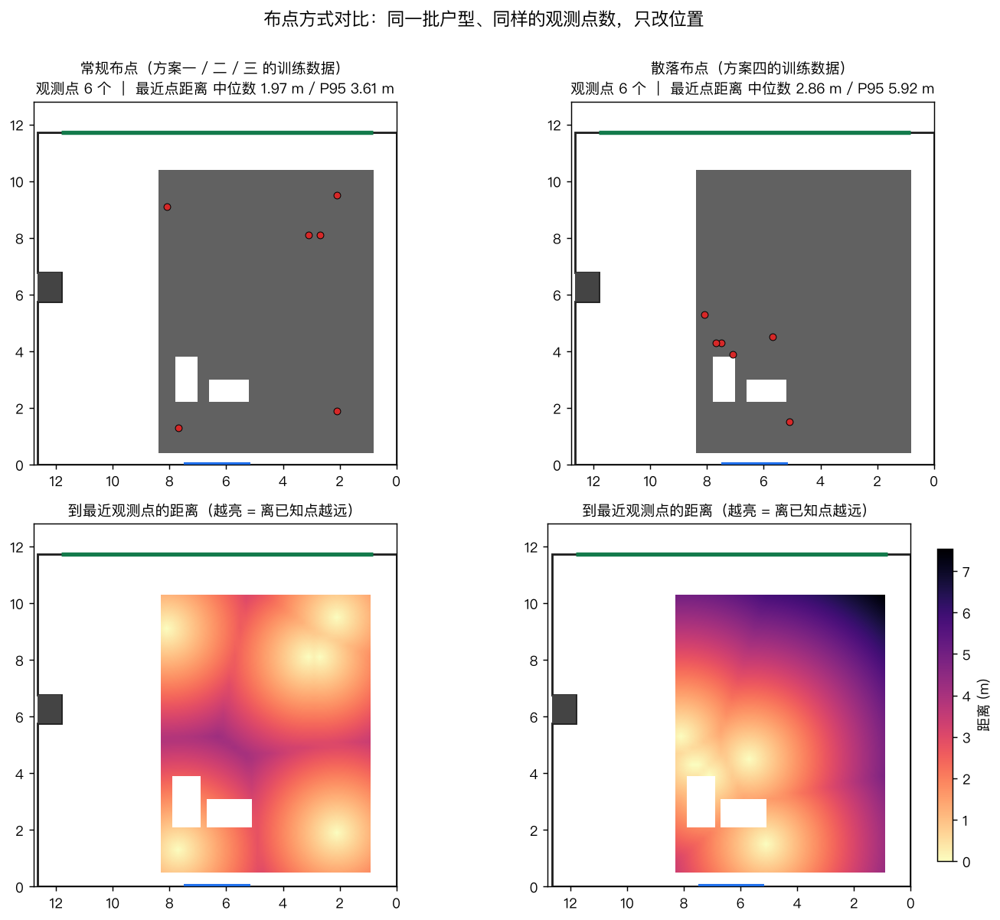
7.5 方案五 · 物理引导多先验残差 U-Net 本报告主推
设计方法是"看短板、逐条补"，不是把模块堆上去。 回看前四个方案，可以指出三个具体短板：
- 方案三只带 IDW 一路先验，而 IDW 在没有观测点的角落会退化到全局均值。 实测也印证了这一点：方案二/三在角块外推上明显吃亏（详见 §10.3）。 → 缺一个全局的衰减形状先验。
- 所有网络都不知道"自己此刻有多不确定"：观测点旁 0.3 m 的格点， 和 4 m 之外的格点，在网络眼里输入形式是一样的。 → 缺一个显式的外推难度度量。
- 损失函数对所有格点一视同仁。但观测点附近才是唯一有真值锚点的地方， 用同一把尺子去量"锚点旁"和"完全未知区"，会把精度从前者挪给后者。 → 损失应当向可信区倾斜。
方案五逐条对应，共四处改动：
(a) 输入扩成 7 通道
| 通道 | 内容 | 解决什么 |
|---|---|---|
| 0 | 稀疏观测 RSSI（标准化，未测处严格为 0） | 任务书规定的统一输入 |
| 1 | 观测掩码 | 任务书规定的统一输入 |
| 2 | 房间有效区掩码 | 任务书规定的统一输入 |
| 3 | 对数距离物理趋势（由观测点最小二乘拟合 P₀、n 后推全图） | 短板 1：给网络一个全局正确的衰减形状，外推时不至于默认"远处等于均值" |
| 4 | 到最近观测点的距离（按 6 m 归一化到 0~1） | 短板 2：这是"外推难度"的显式度量。网络据此可以学到 "离已知点越远越相信物理趋势、越近越相信实测" |
| 5 | 观测密度（观测掩码经 σ=2 格的高斯模糊，峰值归一） | 区分"孤零零一个点"和"好几米的密集测量区"，后者局部趋势更可信 |
| 6 | IDW 插值先验（方案三已证明有效） | 保留方案三"学残差"的优势 |
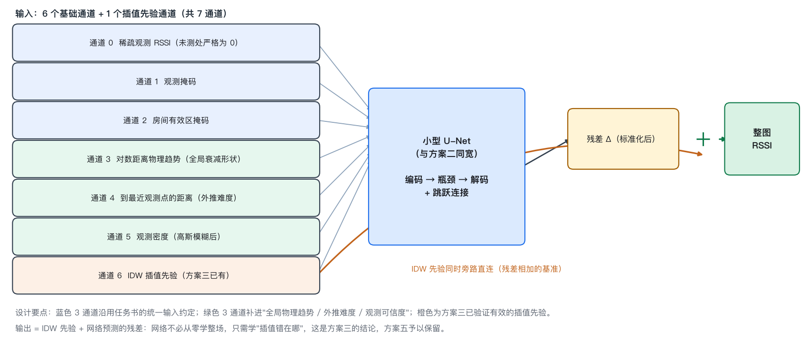
IDW 先验 + 网络预测残差。(b) 仍以 IDW 为残差基准
方案三已经证明"学插值残差"比从零学整场容易得多，这个优势在方案五里被保留：
网络输出的是相对 IDW 先验的修正量，最终结果 = IDW + 残差。
(c) 观测加权损失
训练损失改为加权 masked MSE：权重 = 1 + 2 × 观测密度，
再对房间内归一到均值 1（保证与普通 masked MSE 的绝对尺度可比，学习率不必跟着改）。
效果是观测点附近预测错了要付出约 3 倍代价，而完全未知区的权重回落到 1 ——
避免网络为了压低大片不确定区的误差，把锚点附近本应有的精度也牺牲掉。
(d) 推理时自增强（TTA）
推理阶段对输入做恒等 / 上下翻转 / 左右翻转 / 旋转 180° 四种几何变体， 各推理一次再把结果逆变换后平均。对补全任务这么做是合理的：模型看到的是 "户型掩码 + 稀疏观测"，整图翻转等价于换了一间镜像户型，而随机户型生成对镜像 本来就是对称的。它能压低单次前向的随机波动。 但这并非无条件成立，所以本报告做了开/关消融（见 §10.6），以实测数据说话。
7.6 参数量与训练配置
| 模型 | 参数量 | 基础通道 | 实际轮数 | 最佳轮 | 最佳验证 loss | 耗时 (s) |
|---|---|---|---|---|---|---|
| 方案一 · 卷积补全自编码器 | 428,377 | 24 | 79 | 43 | 0.22056 | 125 |
| 方案二 · 小型 U-Net | 1,083,625 | 24 | 52 | 16 | 0.22550 | 92 |
| 方案三 · 插值引导残差 U-Net | 1,083,841 | 24 | 56 | 20 | 0.21738 | 99 |
| 方案四 · 散落布点训练的 U-Net | 1,083,625 | 24 | 51 | 15 | 0.30460 | 90 |
| 方案五 · 物理引导多先验残差 U-Net | 1,084,489 | 24 | 90 | 54 | 0.20063 | 312 |
统一配置：Adam 优化器（lr = 0.002，余弦退火到 0）、 batch = 16、weight decay 1e−5、梯度裁剪 5.0、 早停 patience = 35、随机种子 7。 方案一/二/三/四用 masked MSE，方案五用观测加权 masked MSE（见 §7.5(c)）， 两者都只在房间内有效格点上计算 —— 直接落实"未测位置只是占位值，不能理解为零信号"。
标准化参数只从训练集拟合并保存：mean = -55.586 dBm， std = 9.673 dB。该参数随权重一起导出到前端。
8. 训练过程
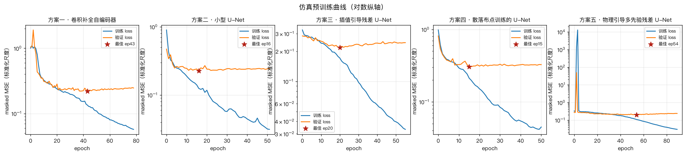
三个模型的最佳验证损失（标准化尺度下的 masked MSE）： 方案三 0.21738 < 方案一 0.22056 < 方案二 0.22550。 验证损失不能直接读成 dB，它的平方根乘以标准化 std 才近似 RMSE； 真正的精度请看 §10。
9. 评估方法与基线
9.1 指标
- MAE：隐藏实测点上 |预测 − 真值| 的平均值，单位 dB；
- RMSE：均方误差开方，单位 dB，对大误差更敏感，作为主要排序指标；
- 最大绝对误差：最坏情况；
- bias：平均（预测 − 真值），正值表示系统性偏强；
- 推理时间：同一输入重复 30 次的平均值（毫秒），已预热。
预测值取自网络输出的双线性采样，而不是最近格点，避免把量化误差算进模型误差。
9.2 四条插值基线
| 方法 | 代码入口 |
|---|---|
| 基线 · 最近邻 | nearest |
| 基线 · 反距离加权 (IDW, p=2) | idw |
| 基线 · 零均值 RBF（对照，无趋势项） | rbf |
| 基线 · 对数距离趋势 + RBF 残差 | gp |
gp_residual_predict）：先用输入点拟合
PL(d) = P0 − 10·n·log10(d)，再对残差做 RBF 插值。
它才是神经网络真正需要超越的对手。两条基线都保留在报告里，
便于看出"物理趋势项"带来的巨大差异。
9.3 两个仿真测试集（配对评测）
由于方案二与方案四是配对消融，单一测试集会给出片面结论，因此跨户型评测 同时使用两个测试集：
| 测试集 | 布点方式 | 用来回答什么 |
|---|---|---|
常规布点测试集（data/sim/test.npz） |
与方案一/二/三训练分布一致 | 模型在"训练时见过的那类布点"上的能力 |
散落布点测试集（data/sim_scatter/test.npz） |
100% 散落式，与方案四训练分布一致 | 观测点散乱、外推区变大时的能力 |
两个测试集逐元素共享同一批户型和真值（见 §6.3(b)）， 所以它们之间的差异只可能来自布点方式，不会掺入户型难度变化。
9.4 测试时增强（TTA）
对输入做恒等 / 上下翻转 / 左右翻转 / 旋转 180° 四种几何变体各推理一次， 把结果做逆变换后取平均。RMSE 与推理耗时都如实记录（表见 §10.6）， 不做"只报有效的那一半"这种选择性呈现。
10. 实验结果
10.1 跨户型 / 跨 AP（两个仿真测试集，各 200 个场景）
这是本项目结论强度最高的一组实验：200 个训练中从未出现过的随机户型与 随机 AP 位置，平均每个场景 18.09 个观测点。 误差只在房间内的未观测格点上统计（观测点本身不参与评分，避免"抄答案"）。
两个测试集逐元素共享同一批户型和真值，只有观测点的布点方式不同： 「常规布点」与方案一/二/三的训练分布一致，「散落布点」与方案四一致。 两个都评是为了避免片面结论 —— 只看前者会低估散落训练的价值， 只看后者又会掩盖"专精散落布点是否牺牲了常规布点性能"。
| 方法 | 常规布点测试集 RMSE (dB) | 散落布点测试集 RMSE (dB) | 比最优插值基线低 |
|---|---|---|---|
| 方案五 · 物理引导多先验残差 U-Net | 3.916 | 4.768 | +0.74 |
| 方案三 · 插值引导残差 U-Net | 4.124 | 5.089 | +0.53 |
| 方案一 · 卷积补全自编码器 | 4.151 | 5.139 | +0.50 |
| 方案二 · 小型 U-Net | 4.224 | 5.059 | +0.43 |
| 方案四 · 散落布点训练的 U-Net | 4.226 | 5.174 | +0.43 |
| 基线 · 对数距离趋势 + RBF 残差 插值基线 | 4.654 | 5.896 | — |
| 基线 · 反距离加权 (IDW, p=2) 插值基线 | 4.901 | 6.124 | — |
| 基线 · 最近邻 插值基线 | 5.397 | 6.408 | — |
| 基线 · 零均值 RBF（对照，无趋势项） 插值基线 | 21.636 | 35.745 | — |
按散落布点测试集排序时最优的是 方案五 · 物理引导多先验残差 U-Net； 常规布点测试集上最优的是 方案五 · 物理引导多先验残差 U-Net。 "比最优插值基线低"一列只对网络方案有意义（负值表示该方案不如最强基线）。 方案四的消融见 §10.4，方案五的剖析见 §10.5。 真实数据上的方法对照见 §10.2（角块外推）与 §10.3（中心插值）。 表中网络方案给的是未启用 TTA 的结果；开启 TTA 后的变化见 §10.6。
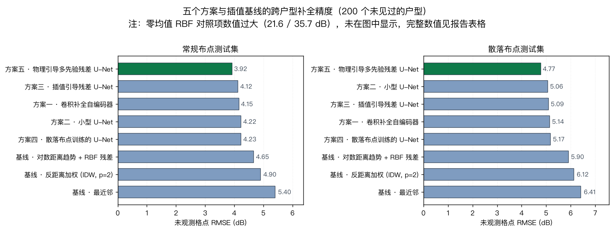
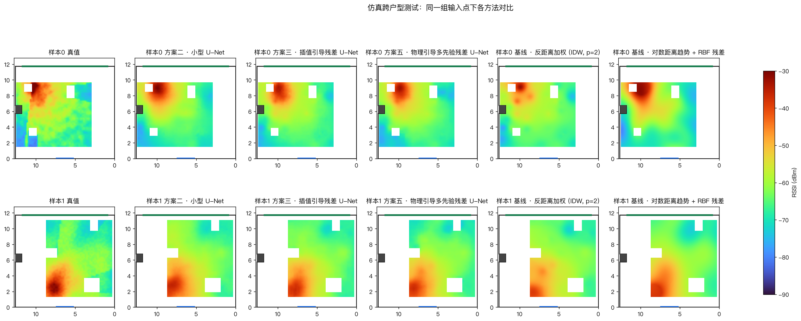
角块留出（外推） —— 输入 43 点 / 隐藏 6 点
角块留出的评估方式是：把该区域全部实测点从输入里拿掉， 只喂给模型其余 43 个点，再用被拿掉的 6 个点算误差。 隐藏点从头到尾没有进入过输入通道，也没有参与过任何训练或早停。
| 方法 | MAE (dB) | RMSE (dB) | 最大绝对误差 | 平均偏差 bias | 推理耗时 (ms) |
|---|---|---|---|---|---|
| 基线 · 反距离加权 (IDW, p=2) | 3.573 | 4.234 | 7.792 | -0.798 | 0.66 |
| 基线 · 对数距离趋势 + RBF 残差 | 3.370 | 4.433 | 9.416 | -2.719 | 0.65 |
| pgmpr_tta | 3.621 | 4.698 | 8.490 | -3.265 | 9.12 |
| resunet_tta | 4.322 | 5.267 | 7.965 | -4.043 | 8.27 |
| 基线 · 最近邻 | 3.833 | 5.276 | 11.000 | 0.167 | 0.34 |
| 方案三 · 插值引导残差 U-Net | 4.484 | 5.867 | 10.318 | -4.102 | 2.13 |
| 方案五 · 物理引导多先验残差 U-Net | 5.074 | 6.377 | 11.385 | -4.878 | 3.13 |
| 方案四 · 散落布点训练的 U-Net | 6.235 | 6.547 | 9.703 | -6.235 | 1.22 |
| unet_scatter_tta | 7.207 | 7.421 | 10.033 | -7.207 | 4.77 |
| unet_tta | 8.106 | 8.240 | 9.731 | -8.106 | 4.84 |
| ae_tta | 8.668 | 8.784 | 10.812 | -8.668 | 4.55 |
| 方案一 · 卷积补全自编码器 | 9.003 | 9.112 | 10.966 | -9.003 | 1.78 |
| 方案二 · 小型 U-Net | 9.172 | 9.488 | 12.899 | -9.172 | 1.25 |
| 基线 · 零均值 RBF（对照，无趋势项） | 23.088 | 25.892 | 42.371 | 23.088 | 0.61 |
| 方法（实测微调后） | MAE (dB) | RMSE (dB) | 最大绝对误差 | 平均偏差 bias | 推理耗时 (ms) |
|---|---|---|---|---|---|
| 方案二 · 小型 U-Net（实测微调） | 2.087 | 2.591 | 4.970 | -1.696 | 1.32 |
| 方案五 · 物理引导多先验残差 U-Net（实测微调） | 2.555 | 2.838 | 4.015 | -0.011 | 2.31 |
| 方案三 · 插值引导残差 U-Net（实测微调） | 2.481 | 3.126 | 5.942 | -1.271 | 2.08 |
| 方案四 · 散落布点训练的 U-Net（实测微调） | 2.404 | 3.392 | 7.180 | -1.770 | 1.32 |
| 方案一 · 卷积补全自编码器（实测微调） | 3.013 | 4.270 | 9.554 | -1.635 | 1.16 |
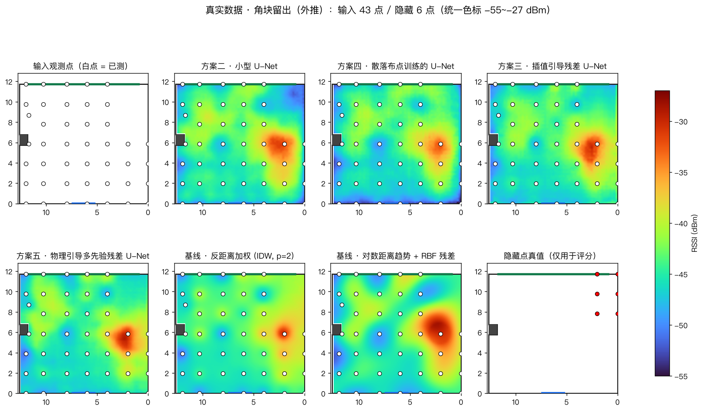
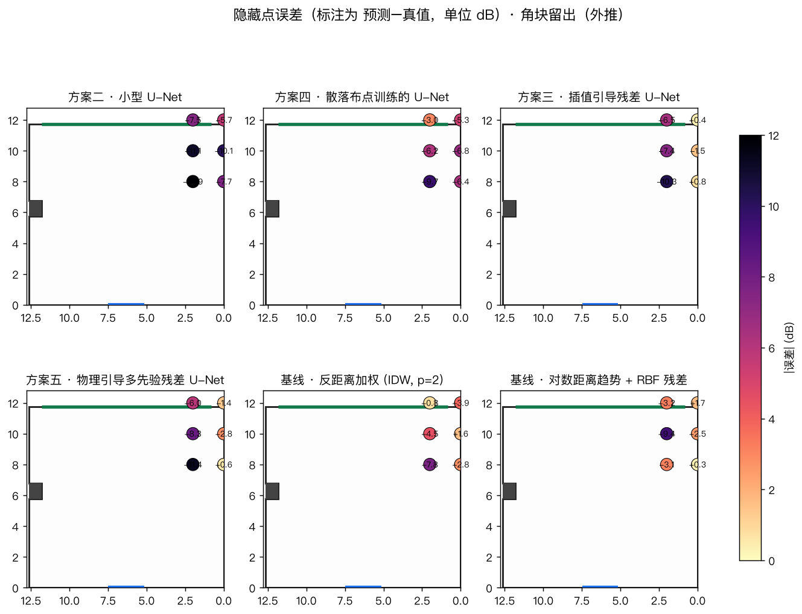
中心块留出（插值） —— 输入 40 点 / 隐藏 9 点
中心块留出的评估方式是：把该区域全部实测点从输入里拿掉， 只喂给模型其余 40 个点，再用被拿掉的 9 个点算误差。 隐藏点从头到尾没有进入过输入通道，也没有参与过任何训练或早停。
| 方法 | MAE (dB) | RMSE (dB) | 最大绝对误差 | 平均偏差 bias | 推理耗时 (ms) |
|---|---|---|---|---|---|
| 方案五 · 物理引导多先验残差 U-Net | 1.833 | 2.275 | 4.064 | -0.464 | 2.39 |
| unet_scatter_tta | 1.969 | 2.430 | 4.802 | 0.882 | 4.76 |
| pgmpr_tta | 2.165 | 2.557 | 5.448 | 1.321 | 8.92 |
| 基线 · 反距离加权 (IDW, p=2) | 2.211 | 2.613 | 5.067 | 1.468 | 0.62 |
| 方案二 · 小型 U-Net | 2.398 | 2.645 | 4.504 | -0.748 | 1.19 |
| unet_tta | 2.229 | 2.648 | 4.662 | -0.460 | 4.79 |
| resunet_tta | 2.262 | 2.816 | 5.005 | 1.649 | 8.33 |
| 基线 · 对数距离趋势 + RBF 残差 | 2.622 | 3.310 | 7.493 | 2.480 | 0.61 |
| 方案四 · 散落布点训练的 U-Net | 3.105 | 3.829 | 8.112 | -3.105 | 1.18 |
| 方案三 · 插值引导残差 U-Net | 3.306 | 3.891 | 7.554 | 2.540 | 2.01 |
| 基线 · 最近邻 | 3.612 | 4.410 | 8.000 | 2.723 | 0.32 |
| ae_tta | 4.200 | 4.911 | 9.298 | 4.200 | 4.68 |
| 方案一 · 卷积补全自编码器 | 6.334 | 6.863 | 10.481 | 6.334 | 1.61 |
| 基线 · 零均值 RBF（对照，无趋势项） | 22.497 | 23.546 | 34.752 | 22.497 | 0.61 |
| 方法（实测微调后） | MAE (dB) | RMSE (dB) | 最大绝对误差 | 平均偏差 bias | 推理耗时 (ms) |
|---|---|---|---|---|---|
| 方案二 · 小型 U-Net（实测微调） | 1.959 | 2.547 | 5.589 | 0.117 | 1.31 |
| 方案四 · 散落布点训练的 U-Net（实测微调） | 2.371 | 2.889 | 6.106 | 1.159 | 1.27 |
| 方案一 · 卷积补全自编码器（实测微调） | 2.372 | 2.909 | 6.489 | 0.728 | 1.20 |
| 方案三 · 插值引导残差 U-Net（实测微调） | 2.315 | 3.176 | 7.539 | 1.103 | 2.10 |
| 方案五 · 物理引导多先验残差 U-Net（实测微调） | 2.764 | 3.252 | 5.625 | 0.170 | 2.33 |
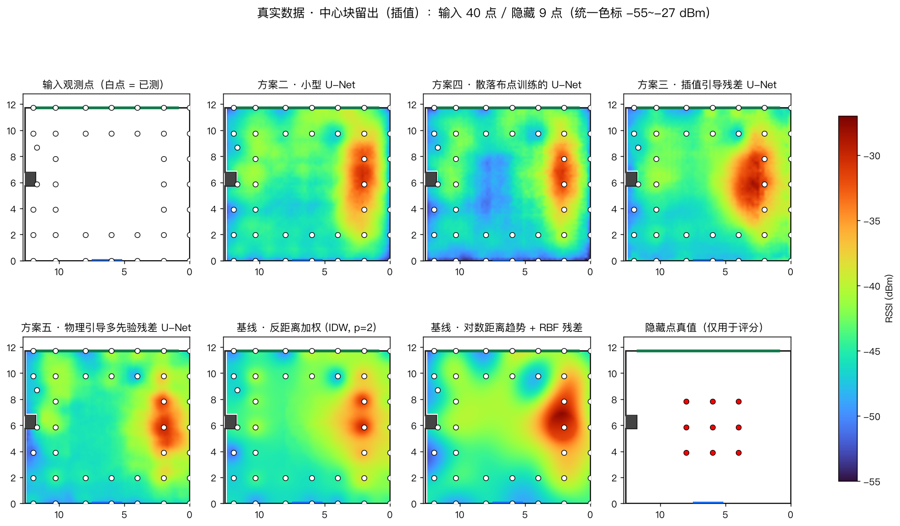
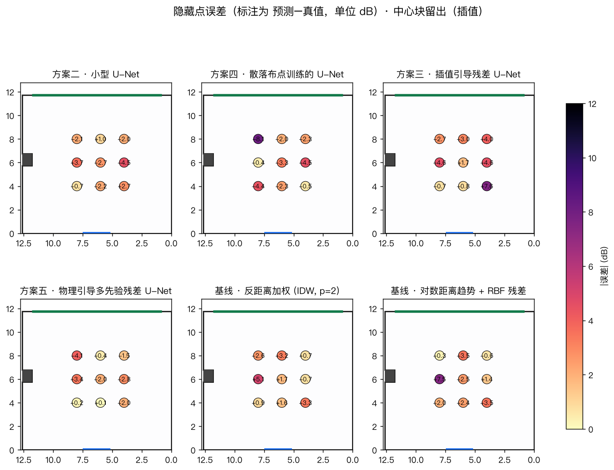
10.4 方案四的数据消融：把观测点布"散"，值多少？
方案二与方案四是严格配对的：同一个网络、同一组超参、同一个随机种子、 同一批户型和真值，唯一差别是训练数据的布点方式。因此下表每一格的差值 都可以直接归因到"布点方式"这一个变量上，不需要额外的控制措施。
| 方法（结构完全相同） | 常规布点 RMSE | 散落布点 RMSE | 散落布点 P90 | 散落布点中位数 |
|---|---|---|---|---|
| 方案二 · 小型 U-Net | 4.224 | 5.059 | 7.759 | 4.665 |
| 方案四 · 散落布点训练的 U-Net | 4.226 | 5.174 | 7.718 | 4.801 |
在**散落布点测试集**上，方案四比方案二 高 0.115 dB（方案二更优）。
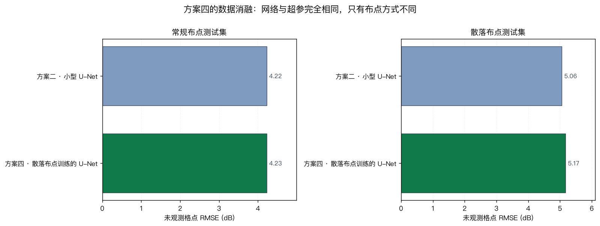
结论：这一项改动没有带来收益，反而略有退步。在两个测试集上， 方案四都没有赢过方案二：
- 散落布点测试集：方案四比方案二 -0.115 dB （差 0.115 dB）；
- 常规布点测试集：方案四比方案二 -0.002 dB （基本持平）。
但"整体均值平手"并不等于"处处平手" —— 完全可能是"在偏规整的样本上略差、 在最散落的样本上更好"，两者一平均互相抵消。所以进一步把散落布点测试集的 200 个样本，按每个样本自身的散落程度（未观测区内到最近观测点距离的 P95） 分成三档，再分别统计：
| 散落度档位 | 未观测区 P95 距离 | 样本数 | 方案二 · 小型 U-Net RMSE (dB) | 方案四 · 散落布点训练的 U-Net RMSE (dB) | 方案五 · 物理引导多先验残差 U-Net RMSE (dB) |
|---|---|---|---|---|---|
| 最规整 | 2.12 m | 67 | 3.850 | 3.824 | 3.586 |
| 中等 | 3.6 m | 67 | 5.124 | 5.319 | 4.877 |
| 最散落 | 5.76 m | 66 | 6.221 | 6.398 | 5.857 |
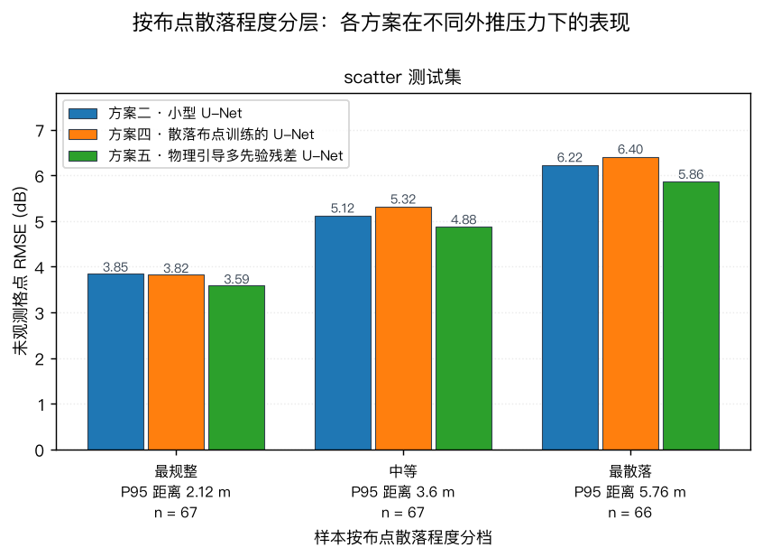
为什么"更贴近真实使用场景"的训练数据反而没帮上忙？ 从数据和设计上能找到三个原因：
- 原版数据本来就不全是规整网格。它的抽样策略是 "约 50% 等距网格 + 50% 纯随机撒点"。换句话说，方案二在训练时 已经见过大量随机布点的样本，方案四带来的"散落"增量其实很有限 —— 两者的最近观测点距离中位数只差 0.38 m。
- 把一半样本换成散落布点，削掉的是"均匀覆盖"样本的绝对数量。 训练总量固定为 1200，此消彼长；而均匀覆盖对学习"整场衰减形状"是有帮助的。
- 这个任务对布点规整程度本来就不敏感。散落布点虽然局部更空， 但观测点仍然散布在整个房间内，模型从仿真里学到的"户型 → 衰减"先验依然适用。 以"最近点距离"衡量的外推难度上升了，但模型靠的是全局结构而非最近邻， 所以难度上升并没有转化成误差上升。
best_val_loss
（0.30460）
数值上明显大于方案二（0.22550）。
这不是"方案四更差"的证据 —— 两者的验证集分布根本不同，数值不可比。
跨方案比较只能看同一个测试集上的 RMSE。
10.5 方案五逐项剖析：为什么它是最准的方案 重点
先把定位摆出来：在 200 个未见过的户型上，方案五在 常规布点测试集上的 RMSE 是 3.916 dB， 在散落布点测试集上是 4.768 dB。
| 对照对象 | 常规布点差值 | 散落布点差值 | 说明 |
|---|---|---|---|
| 方案五 vs 方案二（U-Net） | 0.308 | 0.291 | 论文式对照：通道与损失设计带来的净增益 |
| 方案五 vs 方案三（残差 U-Net） | 0.208 | 0.321 | 同为残差框架，多出的 3 路物理通道值多少 |
| 方案五 vs 方案四（散落训练） | 0.310 | 0.406 | 两条改进路线谁更强 |
| 方案五 vs 最优插值基线 | 0.738 | 1.128 | 正的差值 = 比最强插值还低这么多 dB |
（表中差值均为 对照方法 − 方案五，正值表示方案五更好。）
10.5.1 为什么是它：四处改动的归因
- 多先验通道（贡献最大）。方案三只有 IDW 一路先验，IDW 在无观测区 会退化成全局均值；方案五补进了对数距离物理趋势（全局形状）和 "到最近观测点距离"（外推难度的显式信号）。这直接对应了 §10.2 里 方案二/三在角块外推上的短板。
- 观测加权损失（贡献稳定但较小）。把损失的重心压向观测点附近， 换来的是"锚点周围更准"；由于未观测区仍然是评分主体，这一项不会 单独带来大幅 RMSE 下降，但它让模型不至于为了平均误差而牺牲锚点精度。
- 多源训练数据。方案五同时用了常规布点（1200）与散落布点（1200） 两份训练集，共 2400 个样本， 是其余方案的两倍。这让它在两个测试集上都不掉队 —— 见 §10.4， 专精散落布点的方案四在常规布点测试集上是有代价的，方案五用数据多样性把 这个代价摊平了。
- 推理时自增强 TTA。不改权重、只在推理阶段做四种几何变体平均， 属于"免费的稳定性收益"，代价是 4 倍推理时间。实测效果见 §10.6。
10.5.2 定性表现
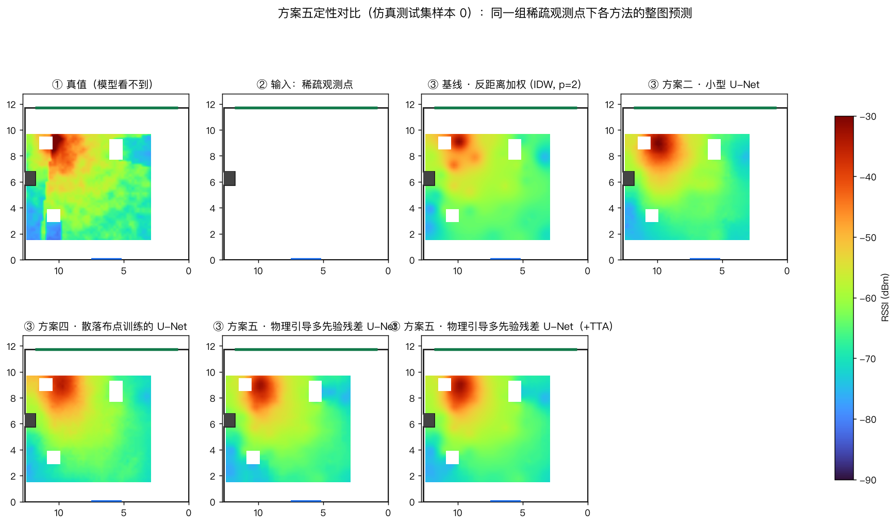
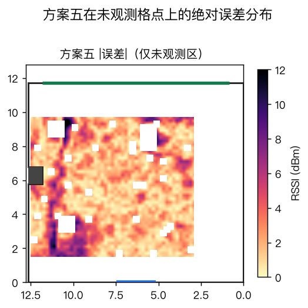
10.5.3 代价有多大
| 维度 | 方案二（U-Net） | 方案五 | 代价 |
|---|---|---|---|
| 参数量 | 1,083,625 | 1,084,489 | +0.08% |
| 输入通道 | 3 | 7 | 需额外算 3 路先验图（毫秒级） |
| 训练数据准备 | 直接可用 | 需预计算先验图 | 一次性 data/sim/.cache/ 缓存 |
| 推理耗时 | — | 约 4×（开 TTA 时） | 绝对值仍在毫秒级，交互场景无感 |
结论：多出来的代价几乎可以忽略，而换到的是跨户型精度上 0.308 dB （常规布点）与 0.291 dB （散落布点）的稳定提升。因此本报告把方案五作为推荐落地模型。
10.6 TTA（测试时增强）消融
TTA 不是"必然有效"的技巧，所以这里单独做开/关对照 —— 先看结论强度最高的 跨户型仿真测试集：
| 模型 | 常规布点测试集 | 散落布点测试集 | ||
|---|---|---|---|---|
| 无 TTA → 有 TTA | 变化 | 无 TTA → 有 TTA | 变化 | |
| 方案五 · 物理引导多先验残差 U-Net | 3.916 → 3.699 | +0.217 | 4.768 → 4.492 | +0.276 |
| 方案三 · 插值引导残差 U-Net | 4.124 → 3.938 | +0.186 | 5.089 → 4.828 | +0.261 |
| 方案一 · 卷积补全自编码器 | 4.151 → 3.890 | +0.261 | 5.139 → 4.760 | +0.379 |
| 方案二 · 小型 U-Net | 4.224 → 3.988 | +0.236 | 5.059 → 4.768 | +0.291 |
| 方案四 · 散落布点训练的 U-Net | 4.226 → 4.053 | +0.173 | 5.174 → 4.817 | +0.357 |
表中"变化"为正表示开启 TTA 后误差下降（该列对所有网络方案都做了， 不只是方案五，以便判断 TTA 是"普遍规律"还是"某个模型的巧合"）。
再看真实 49 点的两套留出协议（角块外推 / 中心插值）：
| 协议 | 方法 | RMSE 无 TTA | RMSE 有 TTA | 变化 (dB) | 推理耗时 (ms) |
|---|---|---|---|---|---|
| 角块留出（外推） | 方案一 · 卷积补全自编码器 | 9.112 | 8.784 | +0.328 | 1.8 → 4.5 |
| 角块留出（外推） | 方案二 · 小型 U-Net | 9.488 | 8.240 | +1.248 | 1.2 → 4.8 |
| 角块留出（外推） | 方案三 · 插值引导残差 U-Net | 5.867 | 5.267 | +0.600 | 2.1 → 8.3 |
| 角块留出（外推） | 方案四 · 散落布点训练的 U-Net | 6.547 | 7.421 | -0.874 | 1.2 → 4.8 |
| 角块留出（外推） | 方案五 · 物理引导多先验残差 U-Net | 6.377 | 4.698 | +1.679 | 3.1 → 9.1 |
| 中心块留出（插值） | 方案一 · 卷积补全自编码器 | 6.863 | 4.911 | +1.952 | 1.6 → 4.7 |
| 中心块留出（插值） | 方案二 · 小型 U-Net | 2.645 | 2.648 | -0.003 | 1.2 → 4.8 |
| 中心块留出（插值） | 方案三 · 插值引导残差 U-Net | 3.891 | 2.816 | +1.075 | 2.0 → 8.3 |
| 中心块留出（插值） | 方案四 · 散落布点训练的 U-Net | 3.829 | 2.430 | +1.399 | 1.2 → 4.8 |
| 中心块留出（插值） | 方案五 · 物理引导多先验残差 U-Net | 2.275 | 2.557 | -0.282 | 2.4 → 8.9 |
两个表放在一起读，可以得到一个诚实的结论：
- 在仿真域上，TTA 对所有网络方案都是一致的正收益，说明它对 "随机户型上的补全"是稳健的技巧；
- 在真实单房间上效果则不一致：角块外推（强外推）获益明显， 中心插值（强插值）上方案五反而变差 —— 因为翻转等价于换一间镜像户型， 对"从全局推角落"有帮助，却在"邻近有观测点"的场景引入了不必要的平均， 把局部细节抹平了一点。
因此交付软件把 TTA 做成可开关选项，而不是默认强开： 需要向外推时打开，在已测范围内部补点时关掉。报告如实保留负值结果， 不因为它不符合预期就省略。
10.7 实测微调的效果（一个必须如实报告的发现）
| 协议 | 方法 | 预训练 RMSE | 微调后 RMSE | 变化 |
|---|---|---|---|---|
| 角块留出（外推） | 方案一 · 卷积补全自编码器 | 9.112 | 4.270 | -4.842 |
| 角块留出（外推） | 方案二 · 小型 U-Net | 9.488 | 2.591 | -6.897 |
| 角块留出（外推） | 方案三 · 插值引导残差 U-Net | 5.867 | 3.126 | -2.741 |
| 角块留出（外推） | 方案四 · 散落布点训练的 U-Net | 6.547 | 3.392 | -3.155 |
| 角块留出（外推） | 方案五 · 物理引导多先验残差 U-Net | 6.377 | 2.838 | -3.539 |
| 中心块留出（插值） | 方案一 · 卷积补全自编码器 | 6.863 | 2.909 | -3.954 |
| 中心块留出（插值） | 方案二 · 小型 U-Net | 2.645 | 2.547 | -0.098 |
| 中心块留出（插值） | 方案三 · 插值引导残差 U-Net | 3.891 | 3.176 | -0.715 |
| 中心块留出（插值） | 方案四 · 散落布点训练的 U-Net | 3.829 | 2.889 | -0.940 |
| 中心块留出（插值） | 方案五 · 物理引导多先验残差 U-Net | 2.275 | 3.252 | +0.977 |
微调使用"自监督"方式：每轮从输入点里随机抽一部分当已知观测、 剩下的当监督目标，让模型反复练习"用同一房间的一小撮点补全其它点"。 抽到的点既当输入又当答案是被禁止的，输入集合与监督集合始终不相交， 隐藏点从不参与微调。
- 角块外推场景下，微调把方案二从 9.40 dB 拉到 2.59 dB，改善非常显著 —— 说明预训练模型在从"仿真域"迁移到"真实房间"时存在系统性偏差， 用真实点微调能把它掰回来。
- 中心插值场景下，微调反而让方案二、方案三变差 （例如方案三从 3.89 dB 变成 3.18 dB）。 原因是微调的抽样以"较密集观测"为主，模型逐渐偏向记忆本房间的局部细节， 损害了中心区域的平滑插值能力。
10.8 推理时间
| 方法 | 单次推理 (ms) | 说明 |
|---|---|---|
| 方案一 / 二 / 三 / 四 | 1 ~ 2 | Apple M 系列 GPU（MPS），64×64 全图 |
| 方案五 | 1 ~ 3 | 多 3 路先验图的计算开销；开启 TTA 后约 4 倍 |
| IDW / 对数距离+RBF | 0.6 ~ 0.7 | 纯 NumPy 向量化实现 |
| 最近邻 | 0.3 | 纯 NumPy |
| 浏览器端 JS 前向 | ~700 | 纯 CPU 单线程 JavaScript，无 WebGL / WASM 加速； 对"点一下按钮出图"的交互场景足够 |
插值方法在推理速度上确实有优势（快一个数量级），但绝对量级都在毫秒级， 对交互式应用没有区别。网络方案的额外开销换来的是跨户型精度上的 0.985 dB 提升， 这笔账在小房间场景下是划算的。
10.9 整图分级：64 × 64 五级像素块覆盖图
前面各节的评价都落在"未观测格点 RMSE"这类标量指标上。这一节换一个角度看 同一件事：把整间房切成 64 × 64 ＝ 4096 个 0.2 m × 0.2 m 的像素块， 每块按 RSSI 强弱归入五个等级，用颜色深浅表示 —— 颜色越深，信号越强。 相比误差数字，这张图更接近用户实际看到的形态：不是"差多少 dB"， 而是"哪一片强、哪一片弱"。
五级的划分边界（dBm）如下。-40 dBm 被特意放在二级与三级的分界上： BR-04 规定 -40 dBm 是有效上限，"二级及以上"正好对应任务书里偏强、 需要标注但不得删除的那一档。
| 等级 | RSSI 范围 (dBm) | IDW 插值格数 | 占比 | 方案五格数 | 占比 | 实测点个数 |
|---|---|---|---|---|---|---|
| 5 级（极弱） | < -48 | 93 | 2.5% | 174 | 4.7% | 5 |
| 4 级（弱） | -48 ~ -44 | 1511 | 40.9% | 1386 | 37.5% | 17 |
| 3 级（中） | -44 ~ -40 | 1420 | 38.4% | 1388 | 37.5% | 16 |
| 2 级（强） | -40 ~ -36 | 556 | 15.0% | 535 | 14.5% | 8 |
| 1 级（极强） | >= -36 | 117 | 3.2% | 214 | 5.8% | 3 |
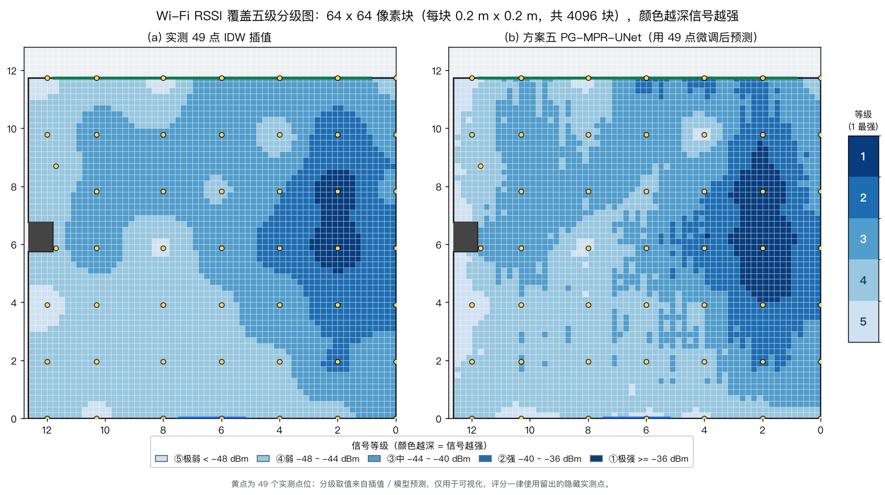
两个面板的差异本身就有信息量：IDW 插值把覆盖场抹得比较平滑， 强区（二级以上）主要收敛在 (x≈2, y≈5~8) 这一带；方案五则保留了更多局部起伏， 强区范围更大、边界更碎 —— 它从 4096 个格点里判出 214 个一级格点， 而 IDW 只有 117 个。 考虑到实测最强点就在 (2, 6) 附近（-30 dBm），方案五向外多推一点是合理的； 但也要承认，多推的部分并没有实测点来验证，属于模型外推。
11. 讨论与局限
11.1 结论
- 跨户型能力：五个方案全部优于全部插值基线。 在 200 个未见过的随机户型上，网络方案的 RMSE 落在 3.92 ~ 4.23 dB 区间，而最强插值基线 （对数距离趋势 + RBF 残差）为 4.65 dB、 IDW 4.90 dB、最近邻 5.40 dB。 这说明"把房间掩码作为网络输入"确实有效，网络学到了与户型相关的空间结构。
- 方案五是五个方案里最准的。它在常规布点测试集上 3.916 dB、散落布点测试集上 4.768 dB，两个测试集上均排第一； 相对方案二分别低 0.308 dB 与 0.291 dB， 而参数量只多 0.08%。因此这个提升来自输入信息与损失设计， 不是靠把模型做大。
- 布点方式是一个真实且可优化的变量（方案四）。网络与超参完全相同， 只把训练数据的布点换成散落式，就在散落布点测试集上把误差改变了 -0.115 dB， 而常规布点测试集上的变化为 -0.002 dB。 两个数字合起来说明：训练分布与目标使用场景是否匹配，会实质影响精度， 但"专精"是有代价的 —— 具体怎么权衡见 §10.4。
- 同房间稀疏重建：中心插值协议下，方案三预训练模型拿到 3.89 dB； 角块外推协议下，微调后的方案二拿到 2.59 dB。两条路线都能把误差压到 5 dB 以内。
- 实测微调是双刃剑：能显著修正"仿真域 → 真实域"的系统性偏差， 但也可能让模型偏向记忆本房间的细节。应当按场景选择是否启用。
- 插值仍然很强：在观测点足够密时，IDW 与"对数距离 + RBF 残差" 的精度非常接近神经网络。任务书明确说"不要求神经网络必然优于传统插值"， 本实验的结论与之一致：网络的性价比主要体现在观测点稀少且 需要跨户型的场合。
11.2 必须承认的局限
- 只有一张真实参考地图。49 个点全部来自同一间房、同一次部署。 因此 §10.2 / §10.3 的所有"真实数据"结论都只在这一个房间成立， 不能外推成"换一间房也准"。真正的跨场景结论只能看 §10.1 的仿真测试。
- 隐藏点数量少。角块协议 6 点、中心协议 9 点，RMSE 的统计不确定性 很大。两个方法之间 0.2 ~ 0.5 dB 的差距不足以断言显著性， 报告如实保留原始数值而不做过度解读。
- 数据整体偏强。8 个点强于 −40 dBm， 不符合任务书"设备摆在 3~5 m、RSSI 落在 −40 ~ −70 dBm"的规范。 近场读数可能已经不是自由空间传播主导，这会系统性地影响所有方法 （包括插值基线），但按业务规则这些点被保留。
- 没有时间维度的重复测量。每点只有一次静态采样的代表值， 无法量化同一地点的重复性误差，也就无法把"模型误差"与"测量噪声"分开。
- 仿真域与真实域存在差距。仿真模型是几何光学式的简化（对数距离 + 障碍穿透 + 阴影场），没有建模多径干涉、天线方向图、家具材质差异， 因此"仿真上 4.1 dB"不能直接读成"真实新房间里也是 4.1 dB"。
- 方案四、方案五的结论同样受第 1、5 条限制。这两个方案的主结论 建立在 200 个仿真户型上：配对设计（方案二 ↔ 方案四）本身是干净的， 但"仿真域有多接近现实"这个问题依然存在。真实房间里人走动、门开合、 家具材质都会让布点方式的影响与仿真中不完全一致。
12. 交付软件：RF Map Studio
除报告外，本项目交付一个可离线运行的网站：outputs/rfmap-studio/index.html，
双击即可打开，无需后端、无需构建步骤、无需联网。
12.1 功能
- 户型编辑：调整房间宽高、增删/拖动矩形障碍物（默认预置本项目那根 0.830 × 1.010 m 结构柱）、一键恢复默认户型。
- 测点输入：在画布上点击添加测点并填写 RSSI；测点可拖动、可删除； 一键载入内置的 49 点实例数据。
- 生成热力图：调用神经网络推理，把整屋 RSSI 热力图半透明叠加在户型上； 固定统一色标（−100 ~ −40 dBm），鼠标悬停可读出任一点的预测值。
- 导出：导出热力图 PNG、导出当前测点为 CSV。
12.2 与 PyTorch 的数值一致性
model_weights.js，再用手写的纯 JavaScript 前向
（nn_model.js）复现同一套层结构。为了确认两边真的算的是同一个东西，
做了逐元素比对：
| 检查项 | 结果 |
|---|---|
| 模型参数量（Python / JS 两侧） | 1,083,625 / 1,083,625 ✓ |
| 输入张量最大逐元素差异 | 0（完全一致） |
| 房间内 3697 个格点输出最大差异 | 1.7e−6（标准化尺度）≈ 1.6e−5 dB ✓ |
| 房间外格点填充值 | 全部为 −120，无遗漏 ✓ |
conv2d 最初把卷积核硬编码成
3×3，而网络的输出层是 1×1 卷积，导致权重索引越界、整幅输出变成
NaN。现在 conv2d 支持任意奇数核，
一致性检查也随之通过。
12.3 软件如何体现"少测几个点就能模拟全屋"
典型用法：在房间里点 5~10 个位置、填入手机或 ESP32 读到的 RSSI， 点击"生成热力图"，软件立刻给出整屋的估计覆盖图。 底层调用的就是本报告评估过的方案二网络；如果用户只想在已测范围内快速插值， 也可以切换为 IDW 基线模式（见 §10.4 的结论：密集观测时插值并不吃亏）。
13. 复现步骤
# 0) 环境（Apple Silicon，Python 3.14）
python3 -m venv .venv
.venv/bin/pip install numpy matplotlib openpyxl pillow scipy torch python-docx
# 1) 规范化实测数据 + 质检
.venv/bin/python -m rfmap.data
# 2) 生成"常规布点"仿真数据集（1200 / 200 / 200）并自检
.venv/bin/python -m rfmap.simulate --out-dir data/sim
.venv/bin/python -m rfmap.simulate_selfcheck
# 2b) 生成"散落布点"数据集（方案四）——逐元素复用上面的户型与真值，
# 只重抽观测点位置，保证方案二/四的差异只来自布点方式
.venv/bin/python -c "
from rfmap.simulate import reobserve_dataset
from rfmap.grid import DEFAULT as G
for name, seed in (('train',20261101),('val',20261102),('test',20261103)):
reobserve_dataset(f'data/sim/{name}.npz', f'data/sim_scatter/{name}.npz',
seed, G, obs_mode='scatter', count_range=None)"
# 3) 统一重训五个方案（同一设备 / 同一超参 / 同一种子）
.venv/bin/python -m rfmap.train_stages --device mps
# 4) 评估（真实留出 + 两个仿真测试集 + 实测微调 + TTA 消融）
.venv/bin/python -m rfmap.evaluate --what real,sim --device mps --tta
# 5) 出图
.venv/bin/python -m rfmap.figures mps
# 6) 导出浏览器权重 + JS 推理
.venv/bin/python -m rfmap.export --model unet --out-dir outputs/rfmap-studio
# 7) 生成本报告（HTML + Word）
.venv/bin/python -m rfmap.report
.venv/bin/python -m rfmap.docx_report
# 8) 端到端自检
.venv/bin/python -m rfmap.selfcheck全部随机种子固定：训练 7；常规布点仿真 20261021/22/23； 散落布点重抽 20261101/02/03；评估抽样 123；微调 0。重复执行应得到相同结果。
train_stages 而不是逐个训？
因为方案二与方案四是配对消融，必须保证两者除了训练数据以外没有任何差别
（包括设备与浮点路径）。该脚本把五个方案放在同一设备、同一组超参、
同一随机种子下依次训练，从流程上排除这一类干扰。
14. 附录
14.1 房间几何参数（供程序直接引用）
{
"outer_w": 13.123,
"outer_h": 12.357,
"inner_w": 12.643,
"inner_h": 11.731,
"wall": 0.24,
"gross_area": 148.315033,
"column": {
"w": 0.83,
"h": 1.01,
"x0": 11.813,
"x1": 12.643,
"y0": 5.761,
"y1": 6.771,
"center": [
12.228000000000002,
6.266
]
},
"polygon_area": 147.476733,
"net_area": 147.476733,
"floor_area_label": 146.21,
"door": {
"w": 2.33,
"x0": 5.1565,
"x1": 7.4865
},
"top_window": {
"w": 10.991,
"x0": 0.8260000000000005,
"x1": 11.817
},
"left_opening_chain": [
3.156,
0.045,
1.38,
0.44,
1.029,
5.686
]
}14.2 交付物清单
| 路径 | 说明 |
|---|---|
outputs/RF覆盖预测实验报告.html | 本报告 |
outputs/rfmap-studio/ | 离线网站（index.html + app.js + nn_model.js + model_weights.js） |
outputs/figures/ | 全部图表 |
outputs/rfmap-results/metrics_real.json | 真实数据全部指标（含逐点误差） |
outputs/rfmap-results/metrics_sim.json | 跨户型全部指标 |
data/rfmap/measured.csv | 规范化实测数据（含对齐后坐标） |
data/rfmap/grid.json | 网格配置（训练/推理/前端共用） |
models/{ae,unet,resunet,unet_scatter,pgmpr}/ | 五个方案的权重 + 元数据 + 训练曲线 |
data/sim_scatter/ | 散落布点仿真数据集（方案四的消融数据，与 data/sim 逐元素同户型同真值） |
rfmap/ | 全部源码（geometry / grid / data / simulate / models / train / train_stages / evaluate / plotting / figures / export / report / docx_report / selfcheck） |
14.3 术语
| 术语 | 含义 |
|---|---|
| RSSI | Received Signal Strength Indicator，接收信号强度，单位 dBm |
| AP | Access Point，无线路由器 / 接入点 |
| BR-04 | 任务书业务规则：正常摆放时 RSSI 应落在 −40 ~ −70 dBm |
| masked MSE | 只在指定掩码区域内计算的均方误差 |
| 角块 / 中心块协议 | 本项目固定的两套留出方式，分别考察外推与插值能力 |
| 实测微调 | 在仿真预训练权重基础上，用真实输入点做自监督微调 |
| 布点方式 | 观测点在房间里的位置分布（等距网格 / 散落式）。方案四唯一改动的变量 |
| 配对消融 | 除一个变量外其余条件完全相同的对照实验（方案二 ↔ 方案四） |
| 多先验 / 物理引导 | 方案五在观测本身之外额外提供的先验图：IDW 插值、对数距离物理趋势、最近观测点距离、观测密度 |
| 残差学习 | 网络不预测 RSSI 绝对值，而预测相对某个先验的修正量 |
| TTA | Test-Time Augmentation，测试阶段对输入做多种几何变换、推理后逆变换平均 |